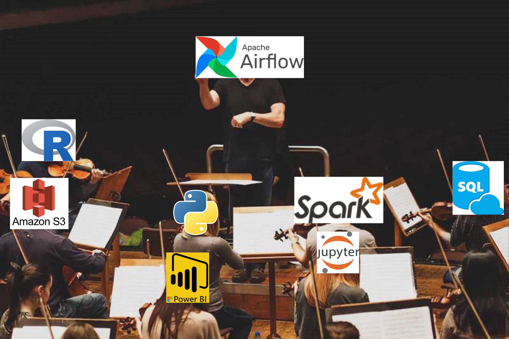

After a long hiatus (sorry about that 😳), I’m excited to post again on this blog and share with you what I’ve been learning recently: how to use Apache Airflow to build data pipelines that interact with AWS cloud services, such as S3 (object storage) and RDS (relational databases).
If you’re new to Airflow and curious about what it’s good for (maybe you’ve heard some data engineers talking about it or have seen it on data science job postings?), then this will be a great place to start, because the post won’t assume any previous knowledge about it.
By the end of this post, you will:
One thing that I’ll have to assume, though, is that you have some basic familiarity with the AWS ecosystem, Python, and Docker, but I’ll also provide links to introductory resources on them that you can refer to if you feel lost at some point 🙂.
You can skip this part if you already know what Airflow is and just want to learn to use it.
If you’ve been working on data science for some time, you’ve probably encountered the need to set up automatic, scheduled pipelines. Typical examples of this are retrieving data from an API on daily basis or loading scores from a predictive model to your company’s database.
For the simplest pipelines, this can be achieved through a Cron Job1 or even using the Windows’ Task Scheduler. If your pipeline consists only of SQL queries, you can also leverage the scheduling features available on some databases.
However, as your pipelines grow in number and complexity, you may reach a point where these tools are no longer enough. Some signals that you’ve reached this threshold are:
You need detailed logs for most of your pipelines but you’re setting up the logging system “manually” for each one of them. Even worse, each of the data scientists on your team has implemented their own logging mechanism.
Some of your pipelines are very intensive on compute and would benefit from being distributed on a scalable infrastructure (i.e. run on more computers).
Other processes must run before your pipeline, but their end time is variable or unknown (you need to “detect” or “listen to” when they’re done).
Your pipelines are becoming more critical in your organisation so you’re starting to develop a dashboard to check their status and receive alerts when something goes wrong.
All of these involve using some features (logging, scalability, dependencies, monitoring, etc) that you technically can code on your own, but why waste on that time if someone else already has done this for you? This is where Airflow comes in handy.

Apache Airflow can be defined as an orchestrator for complex data flows. Just like a music conductor coordinates the different instruments and sections of an orchestra to produce harmonious sound, Airflow coordinates your pipelines to make sure they complete the tasks you want them to do, even when they depend on each other in very complex ways.
The analogy falls short, however, in depicting the full range of Airflow benefits: it’s not only the coordination but also the monitoring, logging and scaling.
For example, Airflow provides an extremely thorough web UI that allows you to monitor the status and history of your pipelines, sparing you the need to develop your own dashboard.
Airflow UI: Tree View of a single pipeline that allows you to see the state and history of each of the tasks in a pipeline and even how they relate to each other!
The same UI gives you access to detailed logs, which can be used to to debug your pipeline’s code when a task is failing. You can also receive mail alerts when a task fails or exceeds a certain duration, and configure Airflow to automatically re-try tasks that fail under certain conditions. And when fixing the error requires manually modifying your code, you can re-run only the failing tasks and their downstream dependencies, while keeping the upstream tasks untouched, thus saving time and processing power.
Accessing tasks’ logs on Airflow’s UI. Again, this is something you would have to implement by yourself if you used Cron Jobs, but which you get for free with Airflow.
Airflow also helps you better manage your computing resources by setting up a queue of tasks that get assigned to the available computers (called nodes or workers), and by letting you scale up or down the pool of nodes dedicated to your tasks. This allows you to run your pipelines faster or to lower your cloud computing bill, depending on your needs
Finally, with Airflow you also get extensibility, which makes it easy to re-use code across pipelines and teams. For example, a data engineer on your team can create a parametrised Operator (more on them later!) that performs a frequent task on your company’s data warehouse. Then you can just reuse that operator instead of having to code the task on your own. Even better, you can find ready-to-use extensions on the Airflow plugin repository so most of the time nobody in your team will have to write anything from scratch.
All of this sounds pretty neat, right? You may even be wondering why anyone would not want to use Airflow for their data pipelines. Here the music director analogy becomes appropriate again: you wouldn’t hire a music conductor to direct a solo performance or a small band. If your pipeline involves few steps and has no complex dependency logic, then you’ll spend more time and resources setting up Airflow than you’ll gain from using it, and you’ll be better off with a simpler tool, like a Cron Job.
One way to think about Airflow is as a lesser evil: you pay up-front for a lot of complexity and annoyance in order to get a more scalable and robust system on which each additional pipeline or component adds less marginal complexity.
This graph is intentionally drawn by hand so you don’t take it too seriously.
Okay, now we know what Airflow is and what it’s good for. Time to learn how to use it!
First, we need to learn how to declare our pipelines in Airflow. For this we use a concept named DAG or Directed Acyclic Graph2. A DAG is a graph with nodes and directed edges (arrows) that represent the tasks and dependencies in our pipelines. It is “acyclic” because it doesn’t allow loops or cycles: you can’t plug the output of a task back into an upstream dependency (it would be a paradox as if Marty McFly from Back to Future met his younger self in 1955 😜).
[image of what is and is not a DAG / I should draw this by hand]
How do these DAGs look in practice? Here is an example script that declares a simple one:
from airflow import DAG
from airflow.operators.bash import BashOperator
from datetime import datetime, timedelta
with DAG(
"tutorial",
default_args={
"depends_on_past": False,
"email": ["airflow@example.com"],
"email_on_failure": False,
"email_on_retry": False,
"retries": 1,
"retry_delay": timedelta(minutes=5),
},
description="A simple tutorial DAG",
schedule=timedelta(days=1),
start_date=datetime(2021, 1, 1),
catchup=False,
tags=["example"],
) as dag:
t1 = BashOperator(
task_id="print_date",
bash_command="date",
)
t2 = BashOperator(
task_id="sleep",
depends_on_past=False,
bash_command="sleep 5",
retries=3,
)
templated_command = """
{% for i in range(5) %}
echo "{{ ds }}"
echo "{{ macros.ds_add(ds, 7)}}"
{% endfor %}
"""
t3 = BashOperator(
task_id="templated",
depends_on_past=False,
bash_command=templated_command,
)
t1 >> [t2, t3]Airflow basic components
Airflow consists of four main components: the web server, the scheduler, the executor, and the metadata database. These components work together to run your DAGs and tasks.
The web server is the component that provides the web-based user interface for Airflow. You can use it to view your DAGs, their status and history, trigger or pause them manually, inspect logs and metadata, etc. The web server also communicates with the scheduler and the executor to coordinate the execution of tasks.
The scheduler is the component that monitors your DAGs and triggers tasks based on their schedule and dependencies. The scheduler also sends tasks to the executor for execution and updates the metadata database with their status.
The executor is the component that actually runs your tasks on a distributed system. The executor can be configured to use different modes or backends depending on your needs and resources. Some of the common executors are:
The metadata database is the component that stores information about your DAGs and tasks, such as their definitions, schedules, dependencies, status, logs, etc. The metadata database also acts as a source of truth for Airflow. You can use any SQL database as your metadata database.
One of the easiest ways to start using Airflow on your PC is to use Docker. Docker is a tool that allows you to run applications in isolated containers that have all the dependencies and configurations they need. You can use Docker to run Airflow without having to install it or set it up manually.
To use Airflow with Docker, you need to have Docker installed on your PC. You can follow this guide (https://docs.docker.com/get-docker/) to install Docker for your operating system.
Once you have Docker installed, you can follow these steps to run Airflow with Docker:
Create a folder for your Airflow project. For example:
mkdir airflow-docker
Navigate to your project folder. For example:
cd airflow-docker
Create a file named docker-compose.yml in your project
A task scheduler for Unix-based operating systems.↩︎
Yes, we’re talking about DAGs again, but not the same kind. Here, DAGs are for managing tasks and workflows, not for modeling causality. Still, Airflow DAGs will be more intuitive to you if you know causal DAGs because both share the same logic.↩︎